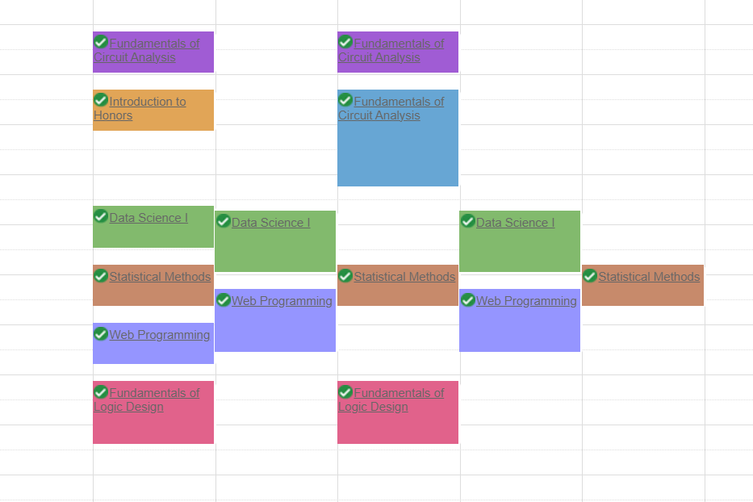
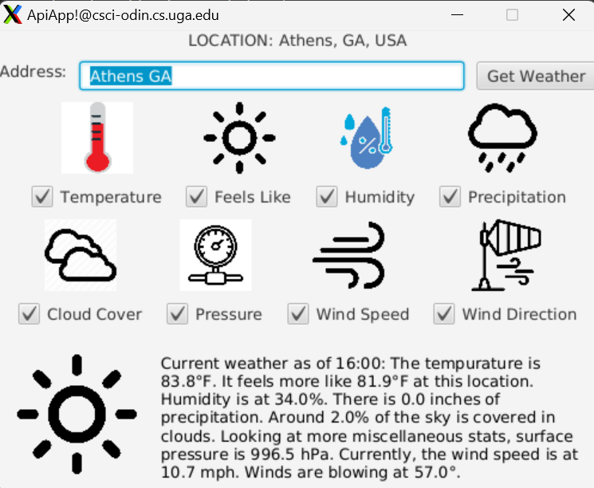
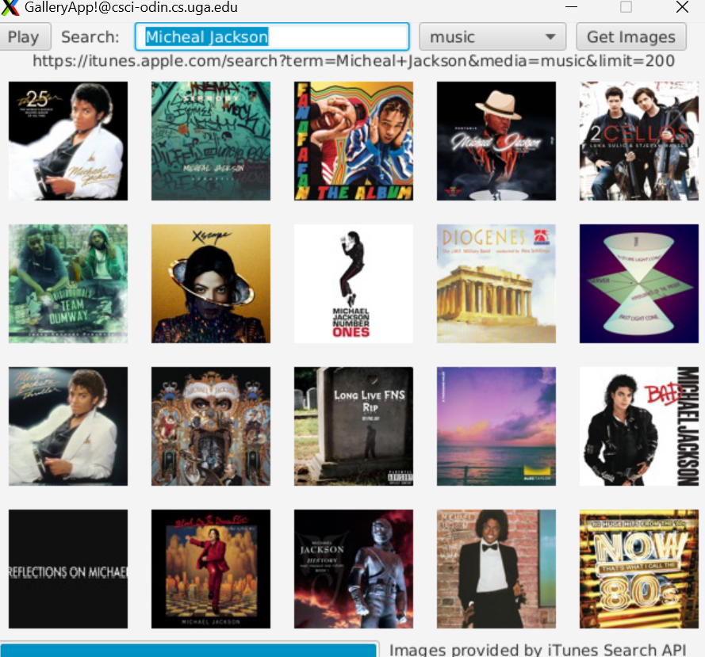

Devon O'Quinn
947 Ross Court • Stone Mountain, GA • (470)301-1640 • doquinn32@gmail.com
I am a second year Computer Systems Engineering Student. I have an interest in Data Science, specifically Database Management and Machine Learning.
Education
University of Georgia - College of Engineering | BS Computer Systems Engineering | Expected Graduation: May 2027
GPA: 4.0 | Courses: Software Development, Data Science, Web Programming, Data Structures
Honors and Awards
- Presidential Scholar
- 12/2023 - Present
- Zell Miller Scholarship Recipient
- 08/2023 - Present
Skills
- Programming Languages: Python, Java, HTML, SQL
- Frameworks: Django
- Databases: MySQL
- Software: Git, VS Code, Eclipse, Emacs
Leadership and Experience
- UGA Student Bus Operator
- 02/2024 - 08/2024
- Publix Bakery Clerk
- 06/2022 - 07/2023
Projects

UGA Coursicle Dupe
- Python script that checks course availabilty of UGA classes.
- Obtained course information using the Selenium Package to screen scrape UGA's public course website every 10 minutes.
- Implemented to allow checking multiple courses at once and to notify any found open seats through email and SMS text messages.

Weather App
- Developed a user-friendly application that displays the current weather forecast for any user-inputted location.
- Implemented with Google Map's Geocoding API so that natrual language could be used to find weather data.
- Coded in Java using JavaFX 17 for the UI/UX.

iTunes Gallery Display
- Developed an application that displays a rotating gallery of image results returned by the iTunes API from a user query.
- Added functionality to filter results by iTunes genres such as movies, videos, songs, etc.
- Coded in Java using JavaFX 17 for the UI/UX.